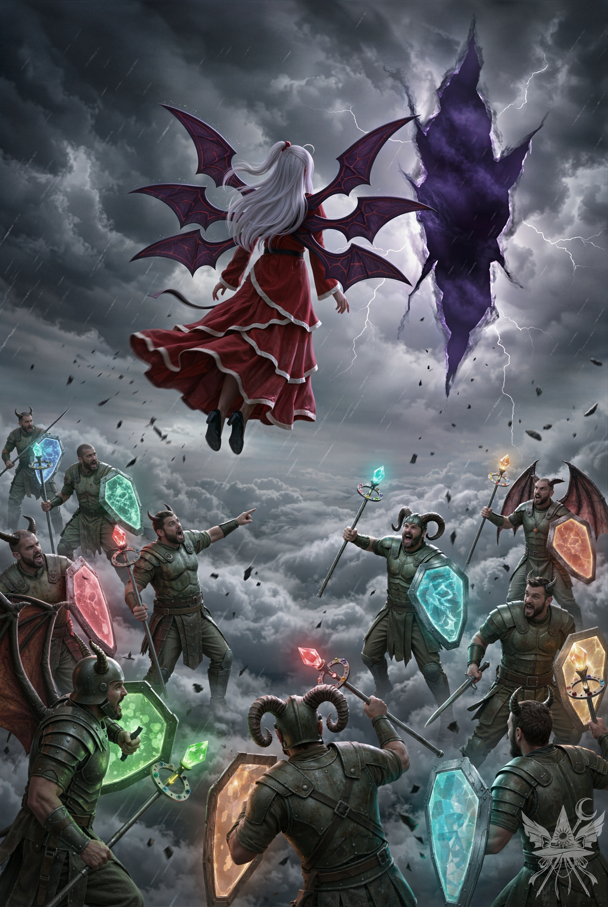
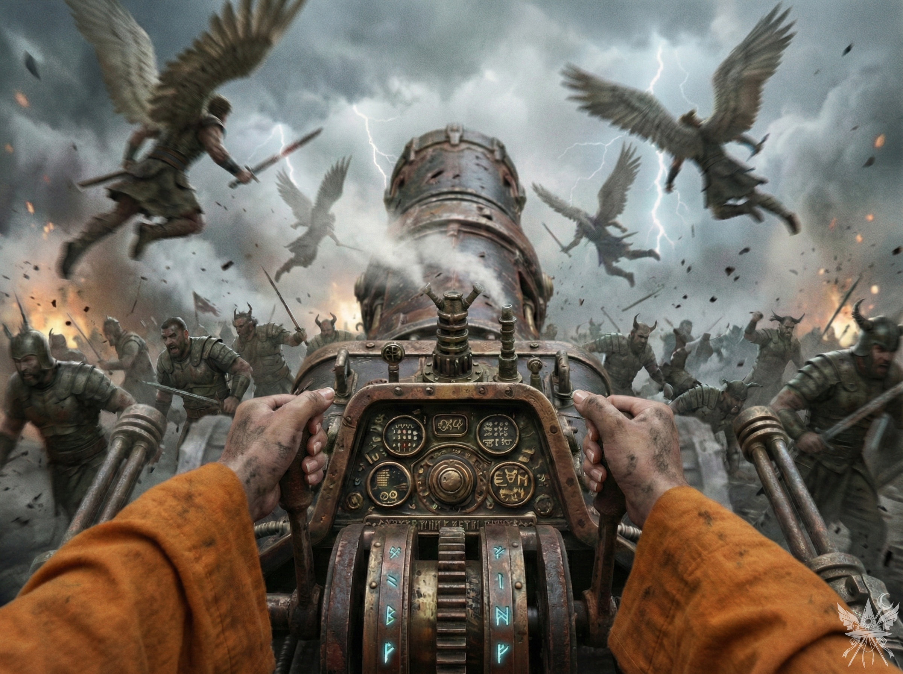

破壊された屋根の穴から容赦なく吹き込む湿った冷風が、肌を粟立たせる。それと同時に、胸の奥底で奇妙な高揚感が渦を巻いていた。ついに歴史が動き始めた。これが、カナの望んだ混沌
（せかい）
なのだろうか。
横目で窺うと、彼女の瞳は暗い炎のように輝き、全身から張り詰めた熱を放っている。これまで周囲を欺くために被っていた従順な仮面はひび割れ、今はまるで戦場を支配する英雄のような、冷たく凛とした風格さえ漂わせていた。
素早く周囲の気配を探る。すぐ傍らには、早苗が息を潜めていた。緊張に身を固くしてはいるものの、オレンジのように軽率に飛び出そうとする気配はない。当の自称「一番の親友」は、手にした杖をくるくると弄びながら、じれったそうに足踏みを繰り返している。脳裏に、幽香の冷ややかな呟きが蘇る。
（あんな思慮の浅い妖怪は、しょっちゅう死んでいるわ……）
頭上では、キクリ、神綺、そして大質量の龍神が、大気を震わせるような創造主の言語で言葉を交わしている。眼下で泥沼化していく殺し合いの喧騒と、神々の重苦しい重圧の狭間で、決断の時が迫っていた。
（偽造した贈与契約書は、今この場で切るべきカードかしら。あの猫（ソクラテス）は『厄介な問題もまとめて片付く』と言っていた……。まさか、その『厄介な問題』にカナも含まれている？ カナ自身は気づいているのだろうか）
思考を巡らせながら、隣に立つ黒幕へさりげなく水を向ける。
「カナ。例の贈与契約書、今見せるべきだと思う？」
「（嘘）ええ、そろそろ潮時かもしれないわね」
カナは平然と答えたが、その声の響きには明らかな虚飾が混じっていた。
（また嘘をついている。私に何かを察しろとでも？）
カナはこちらへ意味ありげな視線を投げた直後、肩の上のソクラテスへ顔を寄せ、冷ややかな底意を隠した声で囁いた。
「さすがソクラテスね。あんなに簡単に龍神に取り入って、ミルクまで貰えるなんて。しかも、一言も言葉を交わさずに、でしょう？」
「（嘘）もちろんニャ。言葉なんて不要だニャ。よく見て学ぶんだニャ」
毛皮を逆立てた猫もまた、尊大な態度で嘘を吐き捨てる。
（ソクラテスも嘘をついた。つまり、龍神と無言で済ませてはいないということ。あの短い接触で、私やカナに不利な情報を吹き込んだと考えるべきね）
腹の探り合いを打ち切り、今は贈与契約書の存在を伏せておくことに決める。崩れた瓦礫を蹴って素早く宙へ舞い上がり、眼前にそびえる巨大な龍の、底知れぬ黄金の瞳と真正面から対峙した。
（もはや、後には引けないわ）
喉のヴィシュッダ・チャクラに魔力を集束させ、荒れ狂う暴風を切り裂くように声を張り上げる。
「龍神様！ 申し上げます。風太様は確かに月の姉妹に攫われましたが、幽閉されているのは夢幻世界ではありません。彼岸です！」
凄まじい質量を持つ緑の瞳がぎろりと動き、こちらを射抜くように細められた。硫黄の匂いを帯びた生暖かい吐息が顔面を叩きつけるが、恐怖をねじ伏せて言葉を紡ぐ。
「姉妹は、閻魔大審議会の命令で動く手駒に過ぎません。閻魔は死者の魂だけでなく、この天界をも完全に支配下に置こうと企んでいるのです。夢幻世界へ赴けば、奴らの罠に嵌り、かつてのキクリ様と同じ運命を辿ることになるでしょう。姉妹の浅はかな挑発に乗らず、真の敵である彼岸を討つべきです。今こそ、あの腐敗した組織を滅ぼす時なのです！」
龍神は沈黙のまま、地上の熱波の向こうで魔界の兵器の周囲を飛び回る死神たちへ、重圧に満ちた視線を投げた。代わって、憂いを帯びた神綺の冷ややかな声が鼓膜を打つ。
「閻魔を滅ぼす？ 笑わせるわね。閻魔大審議会は、ただの事務屋集団ではないのよ。この世界の秩序は彼らによって保たれている。……敵対すればどうなるか、本当に分かっているのかしら？」
創造主の威圧感を前にしても、心に宿った冷たい怒りは揺るがない。静かに、しかし明確な意志を込めて言葉を返す。
「神綺様にはご理解いただけないでしょう。もし、あの閻魔たちの行う裁判が、魂を搾取するために最初から仕組まれた茶番だとしたら……どうされるおつもりですか？」
神綺が不快げに眉をひそめたその時、冷え切った手のひらに、春の陽だまりのような心地よい温もりが触れた。見ると、キクリがそっと手を重ね、慈愛に満ちた眼差しを向けている。
「姉上は、まだお分かりではないだけです。……わたくしは、メデア殿の言葉を信じます。かつて、自らも似たような絶望を経験したゆえ。閻魔たちに立ち向かうことなど、少しも恐ろしくはありませぬ。たとえ再びわたくしが封印され、菊界が闇に閉ざされることになろうとも」
静かな決意を響かせた後、キクリは諭すように問いかけてきた。
「しかし、メデア殿。何故そこまで閻魔と戦う覚悟をお持ちなのですか？ そなたの真意を聞かせてはくれませんか」
その純粋な問いに対し、用意していた建前ではなく、心の底に沈殿する冷たい事実だけを口にする。
「……責任です。閻魔たちの理不尽なシステムによって、私の世界を地獄に変えさせるわけにはいきません。キクリ様と同じように、私にも、自分の世界を守る責任があるのです」
「なるほど……。しかし、彼岸との戦は、計り知れぬ多くの犠牲を伴うことになります。最後まで戦い抜く覚悟はありますか？」
「決めています。私にはもう、失うものなど何もありませんから。地球を理想郷に変えるか、それとも完全に滅ぼすか……もはや、その二つに一つしか道はないのです」
神綺はひどく疲労したような、それでいて氷のように冷たい視線でこちらを見下ろした。
「なるほど。キクリがあなたを気に入った理由は分かったわ。子供じみて無鉄砲で、残酷で傲慢……あなたたちには本当に失望したわ。そんな無謀な破滅の計画に付き合っている暇はないの。好きに暴れていればいい。私は、あの姉妹に操られている悪魔たちを助け、侵略者から私の魔界を守るだけ。……そのうち、皆が正気に戻ってくれるといいのだけれどね」
突き放すように告げると、横にそびえる龍神へちらりと視線を流す。
「龍神も、この二人の甘言に騙されないことね。……キクリと同じ運命を辿りたくないのなら」

吐き捨てるように言い残すと、神綺は崩れかけた塔の頂へと軽やかに舞い上がった。激しい雨風が吹き荒れる中、強大な魔力の波動が空間を震わせる。下界では、完全に自我を失い狂乱する魔界の兵士たちが、天を行くかつての母へ向かって憎悪の雄叫びを上げ、狂ったようにエネルギーの閃光を乱れ撃っていた。
しかし、その絶叫も、空を覆うほどの巨大な亀裂から放たれる稲妻の轟音に掻き消されて届かない。神綺は背後で荒れ狂う泥沼の惨状を一度も振り返ることなく、絶対的な拒絶と悲壮な覚悟を滲ませた背中のまま、紫色の雷が這う不吉な次元の裂け目へと一直線に飛び込み――そのまま嵐の向こう側へと姿を消した。
（神綺は幻月を追って夢幻世界へ向かった。もし風太がそこに囚われていると知られれば、間違いなく龍神は完全に敵に回る。一刻も早く手を打たなければ）
圧倒的な質量の龍は微動だにせず、冷徹な視線だけを地上の惨状へ投げかけている。時が凍りついたかのような重圧の中、意を決して再び呼びかけた。
「龍神様。神綺様は閻魔たちとの争いを避けたいようですが、今回の暴挙は見逃すべきではありません。つけ込まれる前に、対策を講じるべきです」
「龍神よ。古き友のために力を貸してはくれまいか？」
傍らのキクリが、静かに、しかし力強く言葉を添える。
（キクリという存在は興味深い。大仰な口調の割には、驚くほど素直にこちらの提案に乗ってくる。ユゲミアが評した通り、どこか危ういほどの無邪気さを残しているわね）
巨大な龍がしなやかな鱗の胴体をうねらせると、雷鳴に似た地響きが大気を震わせる。
「まずは、この無意味な戦いを止めねばならん」
絶対的な力者の、重々しい宣告が響き渡った。
二柱の創造主が重力から解き放たれ、空へ舞い上がる。深手を負った龍の巨体は、キクリが展開した空間を歪めるほどの強固な結界に守られ、泥沼の戦場の中心――あの巨大な兵器へとゆっくりと降下していった。
「オレンジ」
短く声をかけると、彼女は弾かれたように顔を上げた。
（大声で名前を呼ぶのは悪目立ちして気が引けるけれど、仕方ない）
「あなたの作戦、試してみるわ。私とカミラがあの兵器を奪うまで、敵の注意を逸らしてくれる？」
「わかった！ 早苗ちゃんも一緒にどう？」
好戦的な熱に目を輝かせるオレンジに対し、早苗は穏やかな微笑を崩さずに静かに首を横に振った。
「遠慮しておきます。キクリ様から、軽率な行動は控えるようにと言われておりますので」
（どうやら、命を懸けて前衛を務めてくれるような都合のいい駒は、あの騒がしい妖怪くらいしか期待できないようね）
傍らに控える、ぎこちない怯えを装う黒幕へ、あえて皮肉めいた響きを込めて偽名を呼ぶ。
「カミラ。あなたも賛成かしら？」
フードの奥で、カナが面白がるように小さく頷くのを確認する。
「では、行きましょう」
崩れた瓦礫を蹴って宙へ躍り出た瞬間、鉄の鉤爪のような鋭い感触と共に、ソクラテスが肩へしがみついてきた。カナもまた、無言のまま右後方の死角を飛んでいる。
轟音にかき消されないよう、カナが念話のような冷たい声で問い詰めてくる。
「神綺とはどんな話をしたの？ あいつ、どこへ行ったのよ」
オレンジの無鉄砲な背中を追いながら、手短に状況を共有する。
「幻月を止めるために、夢幻世界へ向かったわ。閻魔との戦いには加わらないそうよ。でも、キクリは最後まで味方してくれるらしいわ」
眼下に広がるのは、ひどく泥臭い膠着状態だった。誰も操作方法を理解していない巨大兵器の周りに、群がる蟻のように群集がうごめいている。翼を持つ悪魔が装甲によじ登り、無秩序なエネルギー波で群がる天使たちを吹き飛ばす。天界の反乱指導者であるシューニャも緋想の剣を振るい、悪魔たちを次々と泥へ沈めているが、狂乱した兵器の集中砲火に足止めされ、完全に防戦に回らされていた。
「ねえ、カナ。あの革命少女（シューニャ）をうまく丸め込んで、私たちに矛先が向かないようにしてくれないかしら？」
「ええ、任せて。手懐けるのは得意なのよ」
カナは薄く笑い、上空へと高度を上げて戦場の死角に潜んだ。そのまま、一気に砲火の渦巻く泥濘へと降下を続ける。
死神の部隊はすでに不毛な乱戦を放棄し、後方の霞む丘へ撤退して陣形を立て直している。
キクリと龍神は兵器の前面に陣取り、青白い炎の息吹で群がる悪魔たちを容赦なく灰燼に帰していた。それでも自我を失った魔界軍は、死の恐怖さえ忘れたように左翼から兵器へと波状攻撃を仕掛けている。
彼らの射線に割り込み、杖を構える。創造主たちと対等に言葉を交わしたという事実が、魔力回路に冷たい高揚感と絶対的な自信を注ぎ込んでいた。
（まるで、弾幕ごっこに興じる無邪気な子供みたいだわ）
かつてチャクラの属性を自在に操る連携魔法で恐れられた魔界軍も、今や狂気に呑まれた烏合の衆に過ぎない。強固な装甲とエネルギーシールドを与えられながらも、魔力の波長を切り替える知性を喪失しているため、完全に宝の持ち腐れだった。
視界を埋め尽くす極彩色の光線の中へ踊り出る。致命傷となり得る黄色の閃光だけを見極めて回避し、他は水色の防御フィールドで冷徹に弾き落とす。ある悪魔の展開するシールドが、限界を知らせる白光を放っているのを見逃さず、杖のリングを「赤」へ切り替える。的確に放たれた数発の赤い魔力弾が直撃すると、過負荷に陥った盾は赤熱し、耐えきれなくなった悪魔は悲鳴と共にそれを泥へ落とした。
ふと、嫌な焦げ臭さが鼻を突いた。見ると、まとう僧衣の袖口が赤黒く燻っている。
（まずい！）
とっさに魔力を回そうとした瞬間、肩のソクラテスが素早く前足を伸ばし、半透明の真紅の膜で袖口を包み込んで酸素を遮断した。
「結界も張れないのか！ 役立たずだニャ！」
「……ありがとう、ソクラテス」
毒づく猫へ、あえて小さく礼を述べる。
二人目の悪魔も、同じ手法であっけなく泥に沈んだ。藍色の杖と水色の盾という単調な装備では、こちらの柔軟な属性変化に到底追いつけない。
しかし、三人目は違った。倒れた仲間の死角から躍り出た筋骨隆々の悪魔は、狂気に任せた獣のような機動力で周囲の空域を飛び回り、回避困難な黄色の光弾を雨霰と撃ち込んでくる。
反応が遅れた。視界を黄色の閃光が埋め尽くす。展開していた水色の結界が、薄氷のように脆く砕け散った瞬間、冷たい高揚感は一気に肌を刺すような死の恐怖へと反転した。
「おい！ 弱虫どもめ！」
破れかぶれなオレンジの雄叫びが、鼓膜を震わせた。彼女は無数の弾幕を曲芸のような動きですり抜けながら、悪魔の群れへ向かって一直線に急降下してくる。だが、その背後には、獲物を狙う鷹のように剣を構えた四人の天使が、冷酷な軌道で迫っていた。
（……そういうことね）
即座に、彼女の無謀な捨て身の意図を悟る。
急降下してきた天使たちは、銀色の短剣を翻し、オレンジを追撃する過程で邪魔になる悪魔の喉笛を次々と掻き切っていく。生温かい血の霧が舞う凄惨な光景の中、異端の僧衣をまとうこちらも当然のように標的とされた。
獣のように暴れるだけの悪魔とは違い、高度な訓練を受けた天使の包囲網は冷徹で隙がない。瞬く間に二人の天使が背後の死角へ回り込み、冷たい刃を交差させる。
（ここまで……かしら）
思考が凍りつく。死の気配が背筋を撫で上げた。
しかし、首を刎ねられる寸前、まばゆい光の輪をまとったオレンジが、杖から強烈な魔力の波動を放った。直撃を受けた天使の一人が、悲鳴を上げる間もなく光の粒子となって消し飛ぶ。
残された天使たちは、仲間の死に激昂し、殺意のすべてをオレンジただ一人へと向けた。
その僅かな隙を突き、地を這うように包囲を抜け出す。血の味がするほど限界まで魔力を回し、天使たちの射線から身を隠す。だが、心臓が破裂しそうなほどに高鳴る中、視界の隅は酷薄な事実を捉えていた。
復讐に燃える白翼の天使の刃が、無防備なオレンジの小さな体を、無慈悲に両断する瞬間を。
少女は悲鳴一つ上げず、静かに淡い光を放ちながら、血と泥の戦場へと霧散していった。
（……本当に、無意味な殺し合いだわ）
感傷に浸る猶予などなかった。直後、背後から強烈な衝撃を受け、ぬかるんだ地面へと乱暴に叩きつけられる。逃げ場はない。前方には、龍神の炎に焼かれながらも狂乱する魔界軍。そして喉元には、今まさにメデアを仕留めようとする天使の冷たい刃先が押し当てられていた。
「待て！ 死神と悪魔だけを攻撃しろ！ 悪魔は生け捕りにしろ！」
金属の仮面を通した、甲高く響き渡るシューニャの号令。その声に縛られるように、喉元の刃がピタリと動きを止めた。
（カナの仕込みが、間一髪で間に合ったようね）
あの騒がしい妖怪の捨て身の陽動、そしてキクリと龍神が魔界軍の注意を惹きつけているこの瞬間。重苦しい金属の塊――巨大兵器の操作盤へと続く道が、ついに完全に開かれたのだった。
四人の死神が主力部隊の陣形から離脱し、むき出しの殺意を放ちながら兵器へと降下してくる。だが、泥を蹴って跳躍したメデアの方が、ほんの一瞬だけ早く巨大な鉄塊の装甲へと辿り着いた。
（どうやって動かすの……？ とにかく触れてみるしかないわね）
冷え切った金属の操作盤に這い上がり、土と煤で汚れた手で無骨なレバーの一つを力任せに引く。凄まじい軋み音と共に砲塔が回転を始め、不安定な座席から泥濘へと振り落とされそうになった。
「兵器から離れろ！」
死神たちが、操作を模索する猶予すら与えずに鎌を振り下ろしてくる。六門の砲身を傾けるには、どのレバーを……？ 焦燥に駆られたその瞬間、肩のソクラテスが前足を伸ばし、操作盤の中央にあるボタンを叩いた。
鼓膜を破る轟音と青白い閃光が弾け、眼前に迫っていた四人の死神は、悲鳴すら残さずに蒸発した。
（もう、後戻りはできないわ）
この兵器が完全に奪取されたと悟った死神の隊長が、通信機越しに甲高い怒号を飛ばす。それを合図に、黒装束の群れが一斉に弧を描き、空から波状攻撃の陣形を組んだ。
一刻も早く、この鉄塊を意のままに操らなければ。焦燥感を募らせながら移動用のレバーを押し込むが、鈍い金属の軋みが内部で反響するだけで、巨大な機体は岩のように微動だにしない。
「メデア、後ろだニャ！」
ソクラテスの鋭い警告に、反射的に旋回レバーを掴む。猫が爪を立てた反動で砲塔が乱暴に回転し、背後から殺到してくる悪魔の群れを捉えた。
とっさに発射ボタンを押し込む。轟音と共に放たれた紫色のエネルギー波が、悪魔の隊列を半壊させた。追撃しようともう一度ボタンを叩くが、砲身は沈黙したままだ。
「再チャージが必要だニャ」
舌打ちをしつつ、杖を構え直す。鎧を軋ませながら猛スピードで迫る十数人の悪魔を相手に、至近距離での乱戦は致命的だ。間合いを取りながら防御フィールドを展開し、牽制の弾幕を放つ。だが、焼け石に水のように、狂乱した悪魔たちは容赦なく距離を詰めてくる。
その時、上空から降り注いだ水色の光雨が、悪魔たちの足を止めた。カナの援護射撃だ。
即座に属性を切り替えた弾幕でカナを援護する。その隙に、ソクラテスが這うように背後へ回り込み、操作盤の歯車機構をいじり始めた。
直後、甲高い金属音と共に、砲身の奥でシアン色のルーン文字が発光する。
（あの猫が、強制的にチャージした……？）
だが、次の瞬間、巨大な砲塔がまるで意志を持ったかのように勝手に旋回を始めた。
制止する間もなく、エネルギー弾が連射される。砲身は徐々に仰角を上げ、上空を舞うカナを追撃していた悪魔たちを容赦なく射線に巻き込み、黒焦げの肉片へと変えていく。
「こっちに撃つな！」
カナの悲鳴が戦場に響く。慌てて操作レバーを引いて砲塔を固定しようとするが、機体は完全に制御不能だった。カナが急上昇して間一髪で直撃をかわすと、空の彼方に新たな脅威――急降下してくる死神の増援部隊の黒い点が現れた。それを確認したかのように、兵器は数発のエネルギー弾を空へ吐き出すと、ふっと機能を停止した。
「ソクラテス。一体何をしたの」
冷や汗を拭いながら問い詰めると、猫は悪びれもせず、軽々と膝の上に飛び乗ってきた。
「ただの接触不良だニャ。もう直したニャ」

鉄が錆びたようなひどい金属臭と、焦げた肉の匂いが、湿った熱気と共にむせ返るように立ち込めている。厚い雲間から奔る青白い稲妻が、荒れ狂う戦場を断続的に照らし出していた。
視線を右へ振ると、巨大な龍神が狂乱する悪魔たちを圧倒していた。煤で黒ずんだアーモンドの林には、もはや動かない魔界兵の亡骸が折り重なっている。
生き残った最後の一団が、激怒した龍神の炎に追い立てられ、パニック状態でこちらの兵器へ向かって逃げてきた。
（……仕方ないわね）
息の根を止めるべく、再起動した砲塔からエネルギー弾を撃ち込む。悪魔たちが密集していた地面は、瞬く間に黒焦げのクレーターへと姿を変えた。
「魔界の軍勢は、眠らせておきました」
キクリが、その凄惨な光景を前にして慈愛に満ちた微笑を浮かべながら、ゆっくりと歩み寄ってきた。
黒焦げの地面に横たわる大質量の龍神は、荒い息を吐き出している。少し遅れて、シューニャに率いられた天使の部隊が到着し、主を護衛するように周囲の空を旋回し始めた。
「……皆、感謝する。……意外にも、天使たちは私を見捨てなかった……」
かつての威厳を潜め、龍神は弱々しい声で呟いた。
「まだ終わっていないわ」
上空を指差す。そこには、体勢を立て直した死神の部隊が、不気味な陣形を組んで静止していた。
そこへ、破れた僧衣をまとい、すすにまみれたカナがよろよろと降り立ち、隣の泥濘へとどさりと腰を下ろす。
「……やっぱり、この兵器、いいわね」
カナはフードを深く被ったまま、メデアにだけ聞こえるよう、冷え切った本性の声で囁いた。そして直後、わざとらしい安堵の声を戦場に響かせる。
「（嘘）ソクラテス！ 無事でよかったわ。助けてくれてありがとう！ もう、どこにも行かないでね」
ソクラテスは言葉を解することを隠すため、鳴き声一つ上げずにメデアの肩へしがみつく。
（白々しい嘘ね。本当は、あの猫の毛をむしり取ってやりたいほど苛立っているくせに）
不意に、増幅された無機質な拡声器の声が、戦場の静寂を切り裂いた。
『創造主たる龍神よ。貴殿は、指名手配犯であるメデア・アルゲアスとカナ・アナベラルを匿っている。速やかに閻魔大審議会へ引き渡せ』
（彼岸のデータベースから名前を消去しておいて正解だったわ。まさか、こんなにも早くその仕込みが活きるとはね）
龍神は鼻孔から濃密な白い煙を噴き出し、黄金の瞳でこちらを鋭く睨みつけた後、雷鳴のような声で空へ轟かせた。
「……やってみるがいい」
『創造主たる龍神よ！ カナ・アナベラルとメデア・アルゲアスは、貴殿の御子息を誘拐し、夢幻世界の侵略者に引き渡した容疑で指名手配されている。速やかに引き渡せ。さもなくば、幇助の罪で処罰する』
その宣告が響いた瞬間、硬い鱗が擦れ合う異様な音が周囲の空気を凍らせた。巨大な龍がゆっくりと鎌首をもたげ、棘に覆われた頭部をメデアの眼前にまで迫らせる。
「……どういうことだ……？」
殺気を孕んだ瞳を前にしても、声の震えを完全に抑え込み、冷徹なロジックを返す。
「当然の結末です。閻魔は天界をも支配下に置こうと企んでおり、私たちが菊界を復興させたことすらも疎ましく思っているのでしょう。すべては、私たちを排除するための彼らのでっち上げです」
「さようでございます」
キクリが凛とした声で同調する。
「わたくしも、閻魔の卑劣なやり口には我慢なりませぬ」
しかし、龍神の疑念は晴れない。
「では、何故あの猫は、メデアの弟子が閻魔のスパイだと言ったのだ……？」
その問いが落ちるより早く、堪忍袋の緒が切れたカナがフードを脱ぎ捨て、素手でソクラテスの喉元を強引に掴み上げた。
「もう我慢の限界よ！ このクソ猫、ここで絞め殺してやる！」
ソクラテスが鋭い爪でカナの腕を引っ掻き、白い肌に赤い血が滲むが、彼女は全くひるまない。
「私を殺そうと企んだ挙句、今度は恩人を売るなんて許せないわ！ 龍神様、こいつこそが、我々を陥れようとする真のスパイなのです！」
キクリはカナの異様な剣幕にわずかに目を細めながらも、静かに制止した。
「落ち着きなさい。この子は彼岸のスパイではありませぬ。メデア殿を深く信頼しておるゆえ、メデア殿の仲間は、わたくしの仲間でもあります」
カナはソクラテスの後ろ足も乱暴に掴み上げ、その動きを完全に封じ込めた。
「もう、こいつをこのゲームから追放する時が来たわ。……メデア、あなたはどう思う？」
キクリがカナの問いを遮るように、静かに、しかし決定的な言葉を口にする。
「待ちなさい。まずは、あの死神たちをどうするか決めましょう。……ここに彼岸へのポータルを開き、この巨大な兵器ごと転送することも可能じゃ。その後の展開は……お分かりですね？」
龍神が、重苦しい視線をキクリへ向けた。
「キクリよ。本当に我が子が夢幻世界ではなく、彼岸の手に落ちているというのか？ 根拠はあるのか？」
重苦しい沈黙が、血生臭い大気に沈殿する。脳内で、無数の冷たい計算が駆け巡った。
（……雲行きが怪しいわ。キクリがこちらに同調してくれているのは幸いだけれど、決して油断はできない。上空の天使軍、緋想の剣を握る天子、そしてこの強力な魔界兵器。天子なら、自身の正体を隠すためなら何でもするはず。
仮に、ここで龍神を煽って彼岸のサーバー室を破壊させたとして、その後が問題だわ。風太を誘拐したのが私だと露見するのは、時間の問題。今、夢幻世界には衣玖、ユゲミア、そして神綺もいる。サーバー室破壊後のリスクをどう回避するか。それと、夢幻世界の問題をどう同時に解決するか……。例えば、私が夢幻世界へ赴き、カナに龍神を案内させる？ あるいはその逆？
それとも、風太誘拐の真相を明かし、天使とキクリ、そしてこの兵器だけで彼岸と全面戦争を起こす？ 疑われないように……『風太様は彼岸で不当な裁判を受けることになっていましたが、既に月の姉妹へ引き渡された可能性があります。早急な確認が必要です』とでも騙るか？
そして最後に……拘束されたソクラテスをどうするか。あの猫の狙いは、カナだけではない。私をもシステムから排除し、始末しようとしていた……？）
[SYSTEM ALERT: 音響兵器デプロイ完了]
▼ 本章の絶望を1000%味わうための専用聴覚データ ▼
■ YouTube：『天地開闢の紫煙（てんちかいびゃくのしえん）』